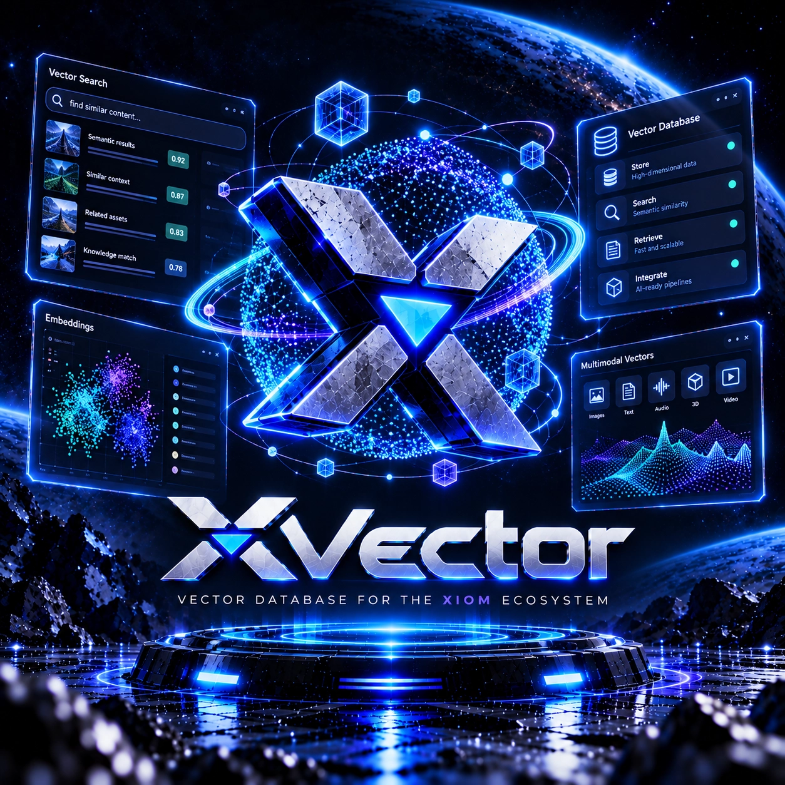
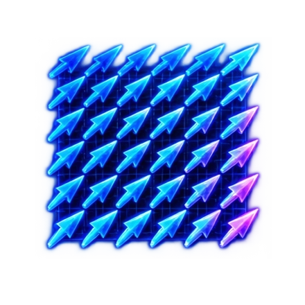
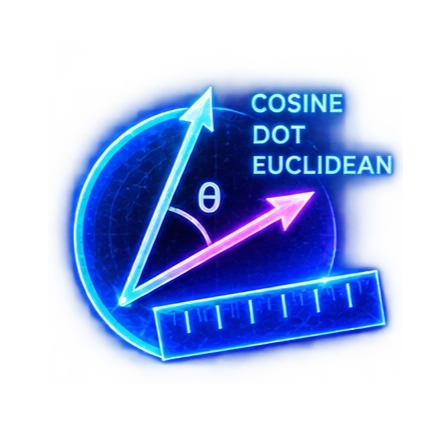
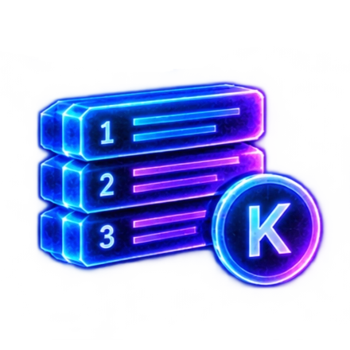
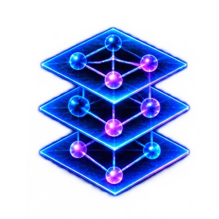
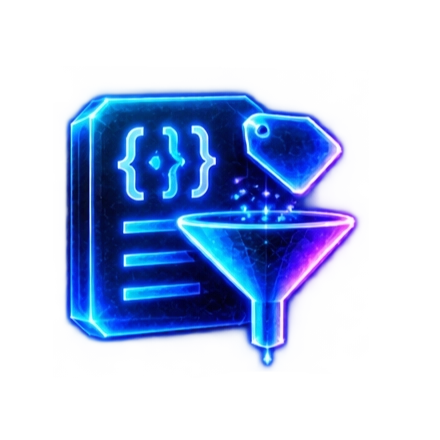
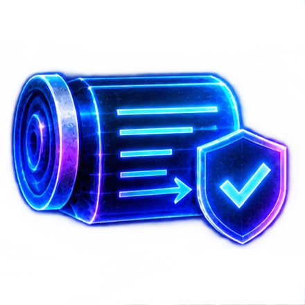
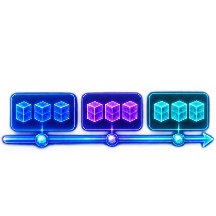

XIOM project -- v1.0.0-rc.1
XVector
A vector database engine for the XIOM ecosystem: dense vectors with cosine, dot-product and euclidean metrics, exact flat search, an in-memory HNSW graph, payload filtering and WAL-backed durability -- built on the shared core primitives rather than around them.
XVector is at release-candidate stage (v1.0.0-rc.1). The code is public on GitHub; the embedded engine is available as the xiom.vectors package. There is no public download yet.
Package: xiom.vectors -- the embedded engine, codename mote (live on the registry, incubating; in-process only, no socket or daemon).
Standalone: lattice -- the scale-out server tier with standalone releases (in development).
What works today
Built with XIOM v0.65.5. The embedded engine ships as the xiom.vectors package on the registry.

Dense vectors
Dense vector type and math.

Distance metrics
Cosine, dot-product and euclidean.
Exact search
Flat KNN and range search -- the oracle every index is measured against.

Top-K and ranges
Bounded top-K heap; range queries, pagination, batch and delete-by-filter.

HNSW ANN search
Hierarchical layers with greedy descent and bounded edges.

Typed filters
Typed filters, a payload index, pre-filtered search and payload hydration.

WAL durability
WAL durability and recovery for vectors and metadata.

Collections and segments
Multi-collection registry; sealed segments with roll and union reads; snapshots.
Recall harness
Measuring ANN recall against the exact oracle -- in progress.
Multimodal vectors
Image, text, audio, 3D and video embeddings -- on the roadmap.
Also included: opt-in SQ8 quantization, an in-process HTTP API, a served daemon with auth scopes and rate limiting, metrics with an ordered log ring, a read-only admin UI, and thread support.
Roadmap
XVector is at v1.0.0-rc.1. The roadmap to the production-grade Tier-X gate is ordered, not scheduled; Tier-X is a proof gate, not a date.
Next: phase 9, G-3 read snapshots, and parity M0 (freezing the reference inventories).
| Phase | Focus | Status |
|---|---|---|
| 1 | Exact engine | Done |
| 2 | HNSW | Done |
| 3 | Durability | Done |
| 4 | Payload and query | Done |
| 5 | Serving and scale-out | Done |
| 6 | Concurrency and observability | Done |
| 7 | Packaging and UI | Done -- v1.0.0-rc.1 |
| 8 | Toolchain hardening | Done -- v0.65.5 accepted |
| 9 | G-3 read snapshots | Next |
| 10 | Parity M0 -- reference inventories | Next |
| 11 | Parity M1 / P0 | Planned |
| 12 | Parity M2 / P1 | Planned |
| 13 | Parity M3 / P2 | Planned |
| 14 | Tier-X gate: at least 90% weighted P0 and P1 parity on the package and standalone surfaces, external benchmarks and audit, security and operations controls, owner greenlight. | Gate |
Not production-ready yet: no TLS or encryption at rest, read snapshots are not done, no IVF/PQ, no mmap, x64 only, durability is opt-in, and the admin UI is read-only. A public release will follow when the owner opens the public release gate.
Downloads
No public download yet. GitHub releases and mirror installers will come with the public launch.